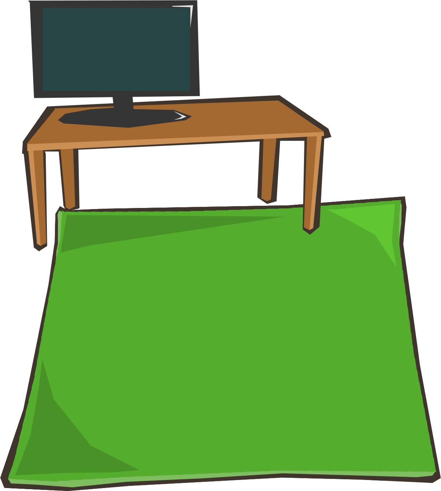

Steuerung
L: Der Staubsaugerroboter dreht sich um 15° nach links. Zum Drehen muss man wiederholt drücken. Wenn eine Animation läuft wird diese beendet.
R: Der Staubsaugerroboter dreht sich um 15° nach rechts. Zum Drehen muss man wiederholt drücken. Wenn eine Animation läuft wird diese beendet.
A: Die Animation der Drehung des Staubsaugerroboters wird automatisch abgespielt und auch wieder beendet, wird die Taste noch einmal gedrückt.
S: Super übertriebener Geschwindigkeits-Modus! Kann über das Drücken der anderen Tasten wieder gestoppt werden.